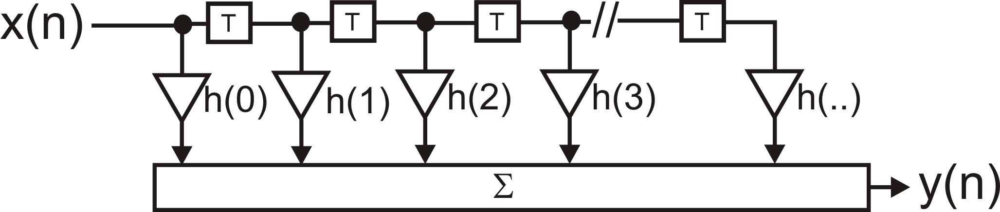

|
fir1
|
Take a look at the documentation, here.

An efficient finite impulse response (FIR) filter class in C++, JAVA wrapper for Android and Python wrapper.
The floating point class offers also adaptive filtering using the least mean square (LMS) or normalised least mean square (NLMS) algorithm.
Add this repository to your package manager:
This adds fir1-dev and fir1 to your package list. The demo files are in /usr/share/doc/fir1-dev. Copy them into a working directory, type gunzip *.gz, cmake . and make.
Make sure you have the homebrew package manager installed: https://brew.sh/
Add the homebrew tap:
and then install the fir filter package with:
The build system is cmake. Install the library with the standard sequence:
or for debugging run cmake with:
cmake -G "Visual Studio 16 2019" -A x64 .
Windows / Linux / Mac
under Windows it might be just pip for python3.
Windows / Linux / Mac: make sure that you have swig and a C++ compiler installed. Then type:
Add to your CMakeLists.txt either
for the dynamic library or
for the statically linked library.
You can also use find_package(fir).
Set the coefficients either with a C floating point array or with a text file containing the coefficients. The text file or the floating point array with the coefficients can easily be generated by Python or OCTAVE/MATLAB:
Use the firwin command to generate the coefficients:
For fixed point you need to scale up the coefficients, for example by 15 bits: b*32768.
which creates the coefficients of a lowpass filter with 100 taps and normalised cutoff 0.1 to Nyquist.
Again, for fixed point "h" needs to be scaled.
or import the coefficients as a const double array:
there is also an option to import a non-const array (for example generated with the ifft) and using std::vector.
where the coefficients have been scaled up by 2^12 and the filter will scale them down by this amount (with the help of a bitshift operation).
where coeff is an array of double precision coefficients and returns the fir filter class.
These functions are the same in C++, JAVA and Python:
getTaps() returns the length of the FIR filter kernel.reset() sets all delay lines to zero.zeroCoeff() sets all coefficients to zero.Retreiving the coefficients/kernel from the FIR filter is different depending on the language used:
void getCoeff(double* target, unsigned length) const copies the FIR kernel into the given C array of doubles with length length.
If length exceeds the length of the filter kernel, the result is zero-padded to fill the given array.
If length is smaller than the filter kernel, a std::out_of_range exception is thrown.
std::vector<double> getCoeffVector() const returns a copy of the filter kernel.getCoeff(n : int) -> numpy.array as per the C++ method, following the zero-padding and exception-throwing behaviour of the C++. The returned array will have n elements.getCoeff() -> numpy.array additional to the C++ methods, this returns an numpy array which is a copy of the filter kernel. This is probably the default use case in Python.double[] getCoeff() returns a double array of the filter kernel.double[] getCoeff(n : int) as per the C++ method, following the zero-padding and exception-throwing behaviour of the C++. The returned array will have n elements.to release the underlying C++ class.
The least mean square algorithm adjusts the FIR coefficients h_m with the help of an error signal e(n):
using the function lms_update(e) while performing the filtering with filter().
Fir1(nCoeff)setLearningRate(learning_rate).x to the FIR filter and use its standard filter method to filter it.e = d - ylms_update(e).The lmsdemo in the demo directory makes this concept much clearer how to remove artefacts with this method.
The above plot shows the filter in action which removes 50Hz noise with the adaptive filter. Learning is very fast and the learning rate here is deliberately kept low to show how it works.
The FIR filter itself is stable but the error signal changes the filter coefficients which in turn change the error and so on. There is a rule of thumb that the learning rate should be less than the "tap power" of the input signal which is just the sum of all squared values held in the different taps:
That allows an adaptive learning rate which is called "normalised LMS". From my experiments that works in theory but in practise the realtime value of getTapInputPower() can make the algorithm easily unstable because it might suggest infinite learning rates and can fluctuate wildly. A better approach is to keep the learning rate constant and rather control the power of the input signal by, for example, normalising the input signal or limiting it.
See the demo below which removes 50Hz from an ECG which uses a normalised 50Hz signal which guarantees stability by design.
The commands under JAVA and Python are identical to C++.
Demo programs are in the "demo" directory which show how to use the filters for both floating point and fixed point.
firdemo sends an impulse into the filter and you should see the impulse response at its output.fixeddemo filters an example ECG with 50Hz noise. The coefficients are 12 bit and you can generate them either with OCTAVE/MATLAB or Python. The scripts are also provided.lmsdemo filters out 50Hz noise from an ECG with the help of adaptive filtering by using the 50Hz powerline frequency as the input to the filter. This can be replaced by any reference artefact signal or signal which is correlated with the artefact.InstrumentedTest which filters both a delta pulse and a step function.The doxygen generated documentation can be found here:
Under C++ just run make test or ctest.
The JAVA wrapper contains an instrumented test which you can run on your Android device.
This library has been adapted form Graeme Hattan's original C code.
Enjoy!
Bernd Porr & Nick Bailey